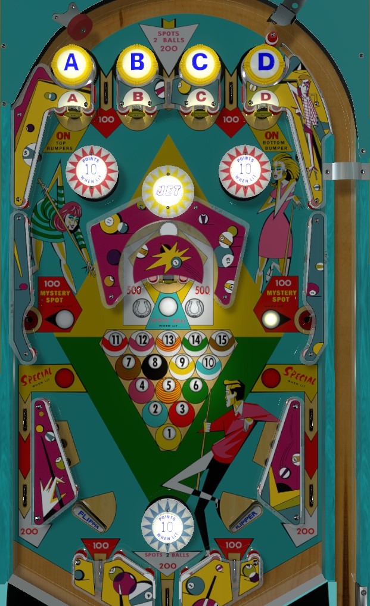

These are single-player games with very similar layout and rules as 8 Ball (Williams, 1966). Miss-O is the replay version. Cue-T is an add-a-ball version. To my knowledge, the only differences on Cue-T are that all scores are multiplied by 10 and specials award extra balls instead of free games. Scores listed in this guide belong to Miss-O.
Plunge the center top lane for 200 points and 2 pool balls. When the ball is near the flipper, it can be either sent back to the top of the table to work on A-B-C-D, or around the horseshoe for 500 points. A and D light bumpers; collecting all of A-B-C-D lights the center horseshoe for an extra ball. Shooting into the side saucers directly is too inconsistent to try as a strategy. Collect the 15 pool balls to light the out lanes doe special. Be mindful when to flip the ball when it's near the bottom of the table, and watch out for ricochets off of or around/underneath the bumper.
The A-B-C-D passive bumpers always score 1 point whether lit or not. They are only lit to show which letter standup targets have been collected. The center top lanes scores 200 points and 2 pool balls; the other two top lanes score 100 points and no pool balls. It's slightly easier to collect the A and D standup targets on the plunge if the ball goes through the left or right lane, but it's usually still preferable to plunge the center and take the 200 points.
The standup targets along the top of the game just below the top lanes award the A-B-C-D letters. These targets score 1 point only. Which letters have been collected is indicated by which passive bumpers at the top of the game are lit. Collecting the A lights the left and right upper bumpers for 10 points instead of 1. Collecting the D lights the bumper between the flippers for 10 points instead of 1. (The center top bumper is always worth only 1 point.) Collecting all of A-B-C-D lights the center horseshoe shot for extra ball. Collecting the extra ball unlights all of A-B-C-D, including unlighting the pop bumpers around the playfield.
1 pool ball is given for free at the start of the game. The top center lane and the center out lane just below the bottom bumper score 2 pool balls. Every 1 point switch hit alternates whether the side saucers, the center standup target, or a combination of both are lit. Lit center standup target awards 1 pool ball. Lit side saucers score 100 points and a random number of pool balls between 1 and 5. (Unlit side saucers score 100 points, but give no pool balls.) Advancing all the way to 15 pool balls lights the side out lanes for special, alternating on 1-point switch hits.
The center horseshoe is the hardest shot to make in the game, especially considering the unorthodox flipper position, but triggering the rollover button in the back of the horseshoe scores 500 points, far and away the most in the game. If all of A-B-C-D is lit, the horseshoe also scores an extra ball and unlights A-B-C-D. Needless to say, if you can get consistent with this shot, you're in for a high score.
The slingshots are very vertical, so it's easy to end up in sling town where the ball "climbs" the slings to end up in the out lane. Use side nudges to try to prevent this.
Out lanes are worth 200 points each, which isn't the worst, but they don't spot a pool ball. Out lanes are lit alternately for special once all 15 pool balls are collected.
The flippers are very far apart and there's an entire pop bumper between them. Below the flippers and lower bumper are three lanes. The outer two score 100 points, and the middle scores 200 points and lights 2 pool balls. The ball can also drain under the flippers and score no points. If it looks like the ball is going to end up below the bumper, try to use a nudge to boost the ball's momentum off the bounce so that it does hit the bumper again.